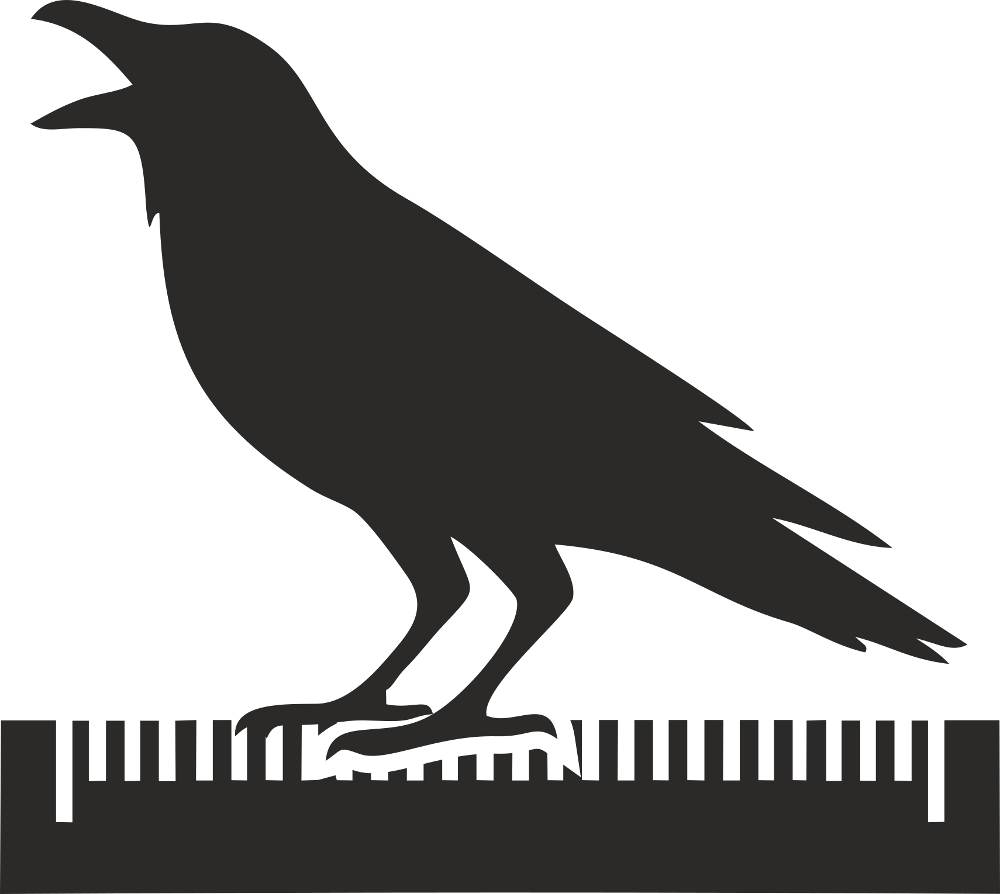

Has abierto el archivo directamente. Para que funcionen la carga y el guardado, ejecuta Abrir Escena Viva.cmd en esta carpeta.

Librojuego digital
Autoguardado activo
Abre una escena desde el explorador.
15 espacios · 5 × 3
El diseñador aún no ha asignado una imagen al mapa.
IDE de diseño narrativo
Bienvenido a Crowther, un IDE de diseño narrativo hecho por Jacobo Feijóo para crear aventuras de ficción interactiva.
Puedes usarlo en tu ordenador u online para construir aventuras. Admite hiperenlaces, sonidos, gestión de inventario e imágenes. Su funcionamiento es intuitivo y es ligero.
¡Disfrútalo!
PREPARA TU AVENTURA
Editor para crear una ficción interactiva visual o un librojuego.
Los datos permanecen en tu navegador hasta que exportas el proyecto o su versión web.
©Jacobo Feijóo. Versión 1.0.0
Crowther se distribuye bajo la GNU GPL versión 3. Puedes redistribuir y modificar el IDE bajo estas condiciones; se ofrece sin garantía. Las copias y versiones modificadas deben conservar el crédito © Jacobo Feijóo en About. Licencia GPLv3 · Condición de atribución · Excepción para juegos exportados.
Proyecto actual
Crowther mantiene un único proyecto activo en el navegador. «Guardar y nuevo» guardará el actual y descargará una copia editable JSON para poder recuperarlo después. «Descartar y nuevo» lo sustituirá sin crear esa copia.
Recurso entre escenas
Elige qué hacer con este recurso.
Exportar juego
El HTML único es más sencillo de mover. El paquete ZIP separa código, estilos, datos e imágenes para publicarlo como sitio estático.